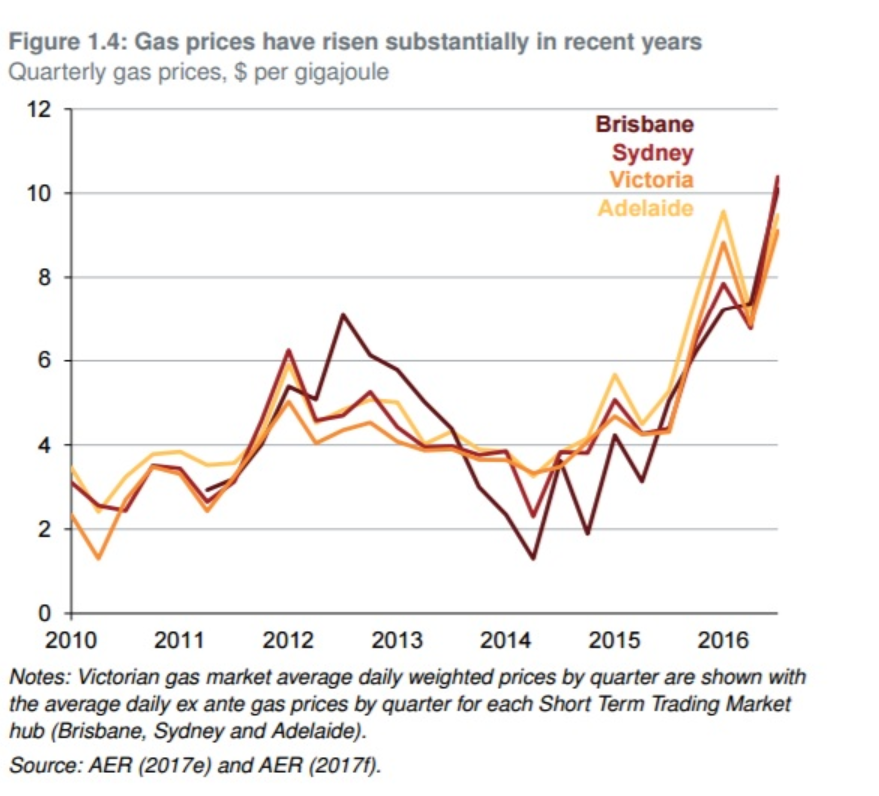
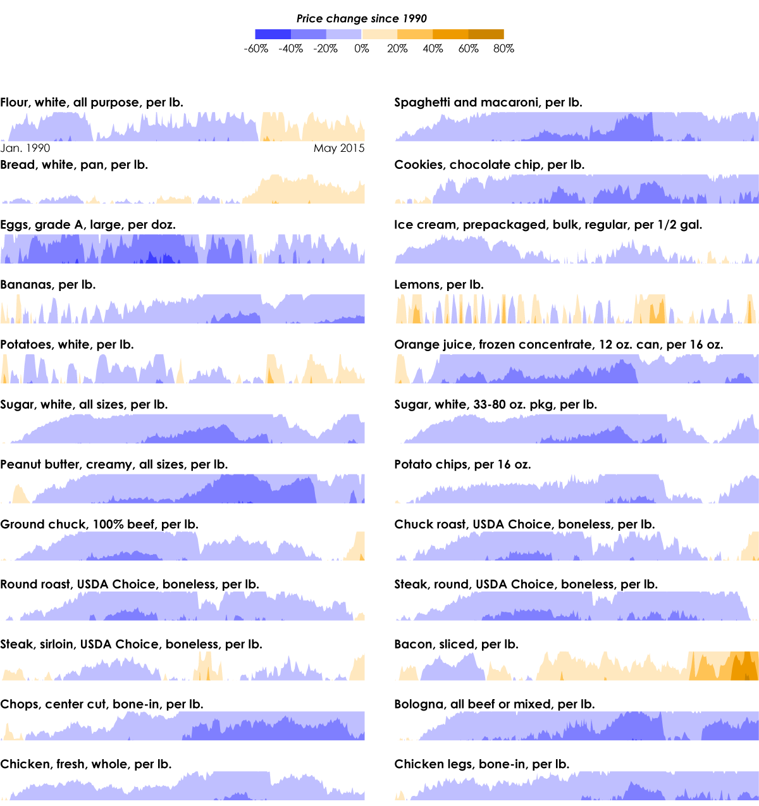
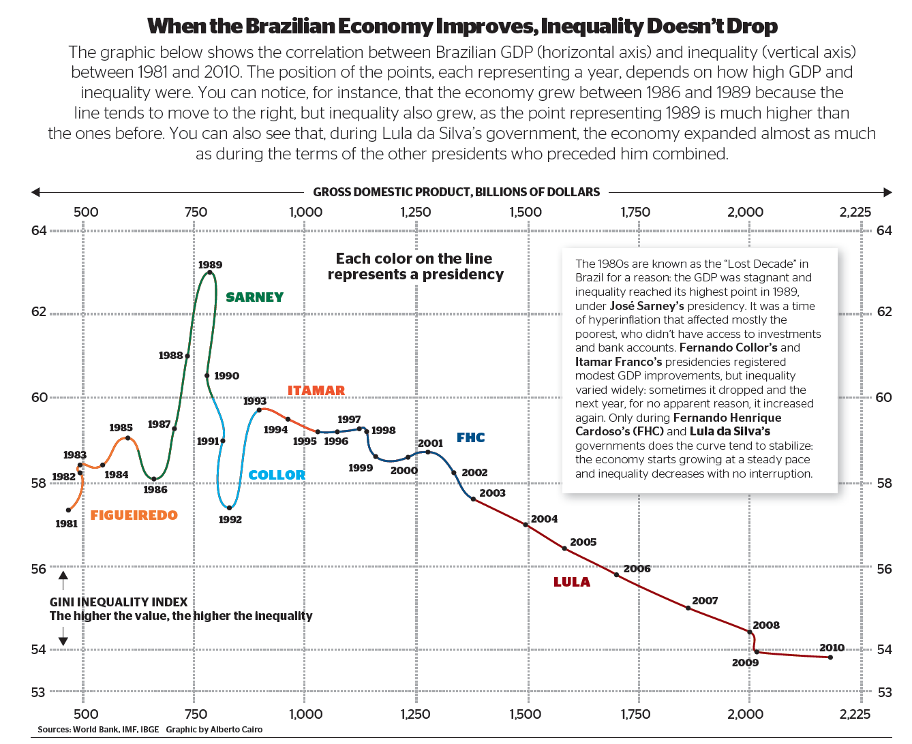

The Truthful Art Chapter 8
In Chapter 8 of The Truthful Art, Alberto Cairo discusses how to reveal change in a visualization. He explains that
revealing change accurately is an important part of an effective visualization. He suggests the following techniques to
highlight meaningful change.
- Time series line charts is the traditional way to visualize change over time. The x-axis made up of equally spaced
time intervals, and the y-axis is the magnitude of the variables which are presented in the chart. When reading a time series
chart, Cairo explains that it is important to consider the trend, seasonality, and the noise. Here is an example of a
time series line chart, with years as a unit of time on the x-axis and gas prices on the y-axis:

- Logarithmic scales may be useful if it is difficult to extract information from a time series line chart.
A logarithmic scale involvse using a log transformation. Cairo uses an example about bacteria. Instead of mapping time in days on the
x-axis and the number of bacteria on the y-axis, he elects to map the time in days with the logarithm of each amount - the
power which the base (typically 10) is raied to in order to get that amount.
Here is an example of
a logarithmic scale, with a non-logarithmic scale of the same data for comparison.
- Horizon charts are used to efficiently display lots of line charts at the same time.The vertical scale is subdivided
evenly, values are color coded, and color bands are collapsed. Here is an example of a horizon chart:

- Connected scatter plots are read by following the line. Each dot on the line represents a unit of time such as a year.
Here is an example of a connected scatter plot:
